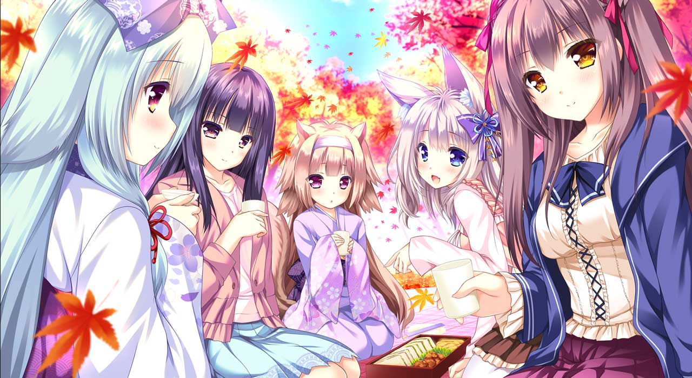
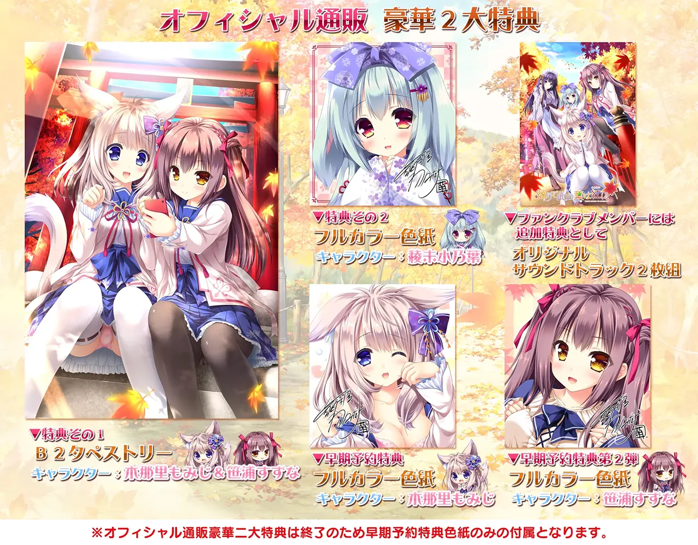

緣染此葉、化爲戀紅：獻給喜歡小動物的你
At A Glance
在紅葉紛飛之地和有尾巴，有耳朵的少女們一起展開超越種族的和風戀愛故事吧！

| 資訊一覽 | |
|---|---|
| 開發商 | Lump of Sugar |
| 攻略人數 | 4 |
| 遊戲時長 | 35h |
| 類型 | 搞笑 獸耳 奇幻 |
| 難度 | 低（直接選人） |
| 分級 | R-18（跨種族性行爲） |
故事
這個世界上生存着兩個種族，
一種是擁有獸耳和尾巴的「幻夷」，
另一種是人類，
二者從幾百年前就已經共同生活。
男主角，清司，和妹妹兩人搬家回到了老家，
那是一個紅葉紛飛的，衆多幻夷生活在此的古都。
剛到的第一天，出門散步的清司走進一片樹林，
然後一個獸耳少女突然衝出來，對你喊道——
「主人，我是你的寵物！！」
講人話又不聽，解釋又不聽，繃不住了，
清司只能把少女帶回了家。
登場人物
我是你的寵物！的失憶少女
每天都活蹦亂跳，
很黏人，
（就像是狗變的）
有尾巴和大耳朵。
幹啥啥不行，
性暗示第一名，
天天對哥哥進行性暗示
（胸很大）
啥事都不幹喜歡當甩手掌櫃。
長者中的長者，人生的經驗
是新家的主人，
非常溺愛男主
（你猜她身高多少）
喜歡自稱 Onee 醬。
實際上是 JK，
性格是無比謎之自信，
講話非常長者，
（看似有很多人生經驗）
實際上也是幹啥啥不行。
其他人物
遊戲 OP
CG

屏幕截圖
一句話點評
這遊戲好！好就好在：
- 有小動物
- 有永遠娘
- 有大家都喜歡的 方糖社 別緻畫風
- 有大家喜聞樂見的 扭捏的兩人小心翼翼互相試探着靠近的 暗戀情節
- 有搞笑的戀愛和甜美的戀愛
- 和風 BGM / CG 獨具意境
這遊戲垃圾，他垃圾在：
- 居然敢日小動物
- 居然敢日永遠娘
- 居然敢翹課做愛
- 居然敢日親妹妹
在猶豫是否要下載？
有一個十分鐘的試玩（沒有小動物出現，建議快進）
資源與下載
遊戲本體
1 | |
文件名： 縁りて此の葉は紅に 初回限定版 + 同梱特典 + 修正パッチ
升級和漢化補丁：🔗️前往 Telegram 頻道
（先裝升級補丁再裝漢化補丁）
对于原创内容，文章作者保留所有权利。转载需要许可，如有需要请前往 🔗️Galgame 频道 留言。
另外，复制链接自由，请随意分享。